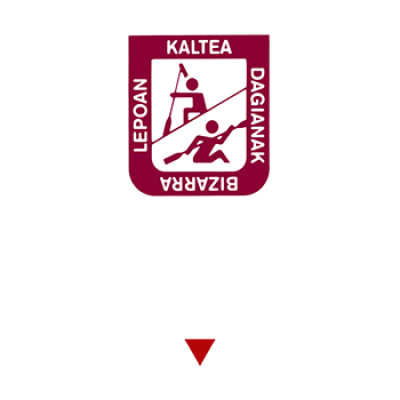
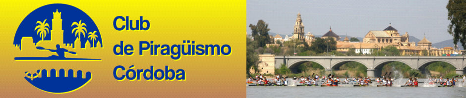
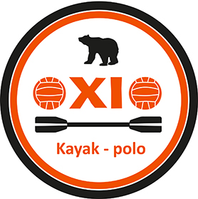
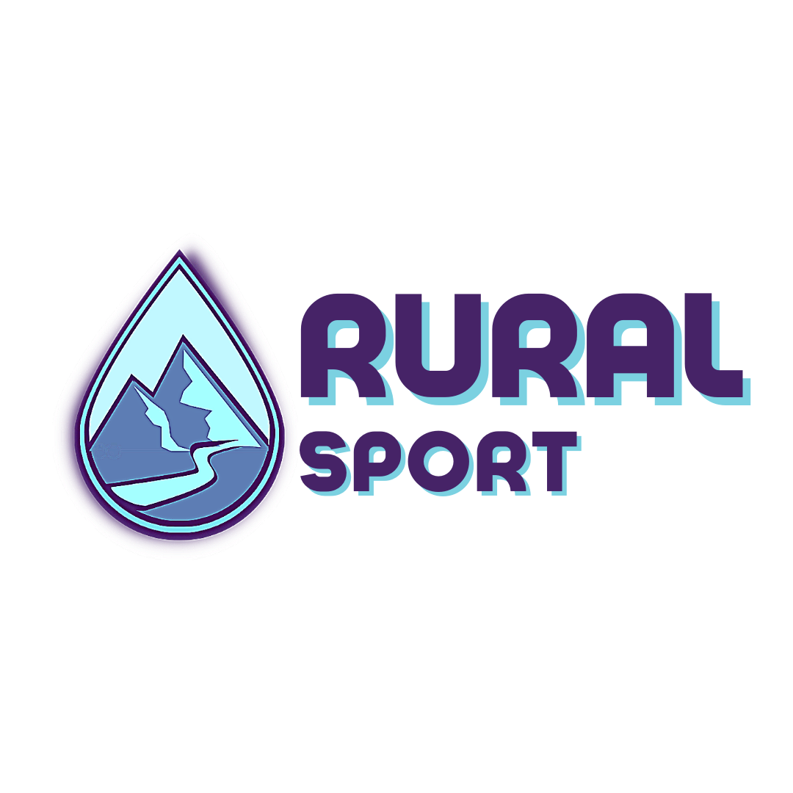

Tolosako piraguismoko Urpera Kirol Elkartea


Badajozeko klubak Christian Romero jokalaria lortu du azken txapelketarako
Teresa Portelak seigarren domina lortu du Europako Txapelketa batean
Espainian piraguismoarentzako errendimendu handiko zentro berri bat eraiki da.
Amador Barranco Espainiako selekzioan jokatzen egongo da hurrengo hilabetean
Piragua mota berri bat garatzen da, arinagoa eta erresistenteagoa.Hurrengo hilabetean ikusiko dugu.
Piraguistentzako entrenamendu-sistema birtual bat ezartzen da.
Piraguistak GKE baterako dirua biltzeko mobilizatzen dira.
Piraguismo-programa bat sortu da desgaitasuna duten pertsonentzat.